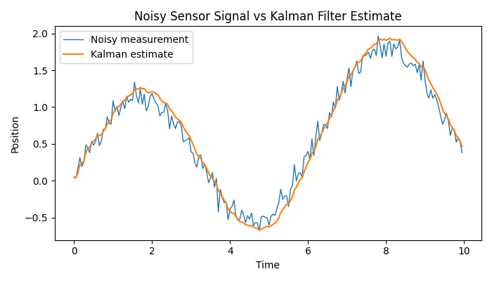
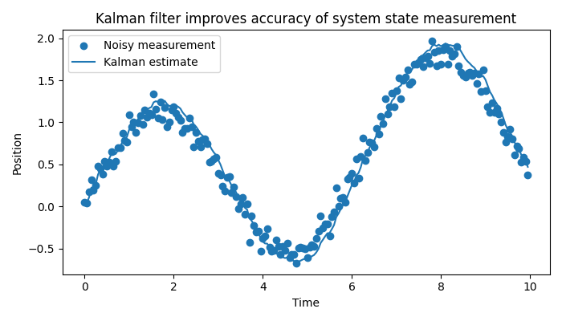
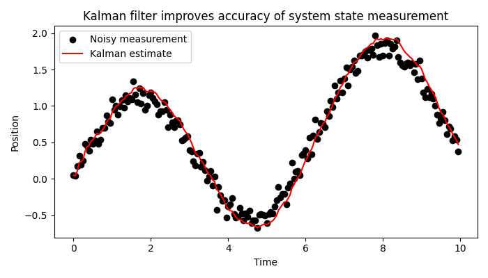
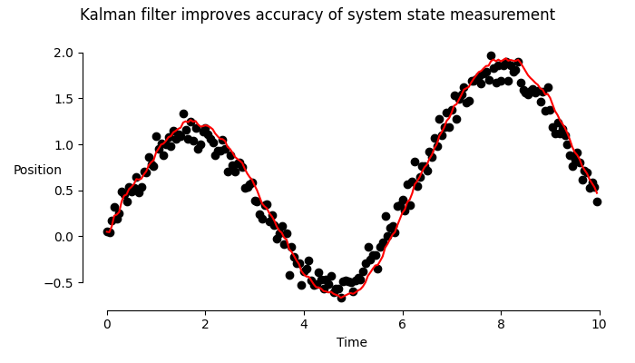
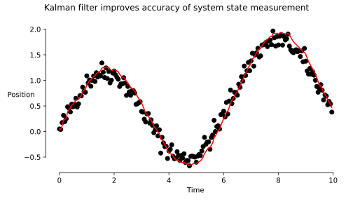
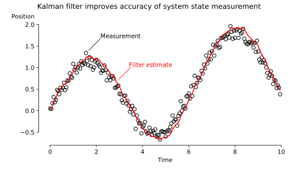

Clear Communication: Making a Point with Graphs
02 February 2026
In this post, I will present ten guidelines for creating better graphs. We'll very briefly explore the differences between graphs used for presentations versus those used for data analysis, and then build toward a final, high-quality visualisation.
These guidelines are based on my personal experience and preferences, which have for a large part been shaped by the teachings of Jean-luc Doumont. I'm sharing them here because making clear graphs doesn't have to be difficult. It can be easy, and make your story that much more powerful.
These are guidelines, not rules. Use your own best judgment and develop your own style. These ideas aren't revolutionary either. But they can be helpful, and perhaps you are one of the lucky ten thousand.
To be clear, we're not discussing graphs for data analysis. When you are exploring your data, you want to visualise it in many different ways to uncover patterns and see what the data reveals.
Instead, we're focusing on graphs for presentations or papers. In this context, the goal of your graph is not to find patterns, but to communicate a message. Once you've completed your analysis and you have a story to tell, you can use these ten guidelines to create your final graph. Let's get started.
1. Figure out your message.
Maybe you guessed this one. Yes, the first step is to figure out what message you are trying to tell. This not only influences what kind of graph you'll be making, but also your axes, labels, and even colours. If you don't have a clear story to tell, don't make the graph. Every visualisation in a paper or presentation must have a clear purpose.
The graph should make the message immediately clear. Consider putting the message verbatim in the title! Too often, an audience must first parse how the data is being shown before they can – hopefully – figure out what you are trying to tell them. By making the message central, it is immediately clear and the audience can use the graph to validate your claim.
If interpreting your graph requires verbal instructions (e.g., "compare the third green bar with the second red bar"), the visual encoding may not be well aligned with the comparison you want to emphasise.
2. Pick the right type of plot.
There is a large amount of graph types to choose from. Even the smallest difference, like a bar plot versus a column plot, can have a large impact on how your message is perceived.
Often, you can stick with the basics: scatter plots, line plots, bar plots, and box plots. Which one of these you pick, depends on how you want to present your data.
- Do you want to show individual data points? Use a scatter plot.
- Do you want to indicate a trend? A line plot does that quite well.
- Do you want to compare counts of categories? Bar plots help sell your story.
- Do you want to report on statistics instead of data points? A box plot can help. Although – you should consider a violin plot instead: it's better at showing the underlying distribution.
These are indeed just the basics, and there's more to choose from. For example, what if you want to show a data distribution, but also individual data points? Consider a swarm plot!
I won't go beyond the basics here. You can do a lot with just these types. But, take a look at the Data Viz Project. This website is a true treasure if you're looking for the right type of graph. Their page "1 dataset 100 visualisations" shows just what you can do with all these graphs. I'm not a fan of all of them – for example I think this curvy line is too distracting – but it's a good source of inspiration.
3. Choose a colour scheme. Stick with it.
I am by no means versed in colour theory, but I can tell you about the importance of picking a colour scheme and sticking with it.
The bare minimum is of course one colour. Quite often, this can be enough (but maybe a bit boring). To start with, use black for everything but the data: axes, ticks, and labels.
Then, the remainder depends on how many categories you are plotting. A single category? You could use black again. You could also pick a primary colour. It can be a colour you like, or if you're presenting for a company it can be the brand's colour. For instance, when I create figures or slides for the IDLab-AIRO research team, I source my colour scheme from the logo – the primary colour being #6bb8a8, secondary colour being #f2be7e, and the tertiary colour being #c64f55. But for personal projects, I use the colour scheme from this website – the primary colour being #214cce and the secondary colour being #e23d28.
{kind=link}
If you have more than one category, you'll need a colour palette. There exist generators for these. Use them if you need to. What I recommend is that your second colour is opposite to your first (e.g., blue and orange) and is slightly lighter – so that it looks good in gray scale. If you need a third, try one that's orthogonal to the other two. Again, play with the lightness to ensure that the curves can be distinguished in grayscale.
4. Remove noise.
You should only draw things that carry information. This means drawing (almost) only the data, and removing superfluous decorations.
Spines (the borders around your plot) are generally useless on the top and right hand sides.
Don't overdo it with ticks: use the minimal amount that you can get away with. Maybe only show ticks at your data points instead of at a regular interval.
Don't draw a grid. It rarely aligns with your data points anyway. If you need to connect axes to specific data points, draw a vertical line from the x-axis, and a horizontal line from the y-axis, to that specific data point.
Don't choose an off-white background colour. Use white for maximum contrast. Note: do draw a white background rectangle: plots with transparent backgrounds are illegible in dark mode. (Disregard this if the background colour carries meaning.)
Finally, consider removing the title if it adds nothing more than the caption already does. Only add a title if there is no caption and your figure is shown in isolation.
In summary – imagine you have to pay for each dot of ink. Be parsimonious.
5. Try drawing it on paper first.
With graphing software, we start with a plot that has near everything: labels, axes, titles, colours, markers... and then, we have to remove all of that. Just like it can be difficult for your audience to see the data through the noise, it can be hard to spot what can be removed, and what should stay.
If you find it difficult to remove noise, what can help is drawing your plot on paper first. On paper, you start with a blank canvas. The principle of least effort dictates that you won't add noise. You'll only add what's needed to make your point.
6. Use horizontal text.
Vertical text can be a literal pain to read.
And still, the default in many plotting software libraries is to have the y-axis label be vertical. I'm sure you've personally turned your head at a graph before. Spare your readers the physiotherapy, and make all text horizontal.
If you think it takes up too much space, use line breaks and right align your text. Then,
Pressure difference (Pa)
becomesdifference
(Pa)
Much better.
7. Label everything. Everything.
This should go without saying, but experience tells me otherwise. Far too often do I see charts that have unlabeled axes. Even if the title reads "Power consumption over time", I'm going to need you to label the y-axis with "Power consumption [W]" and the x-axis with "time [s]". This isn't noise. It's information.
Again, it's all about clear communication of your message. All the time spent by the audience trying to understand what they're looking at, is time you could've spent making your point.
8. Be bold.
Use big enough fonts. Readers shouldn't have to pry their eyes at your graph. Choose the font size based on where the chart will end up. If you use a 12pt font, but then scale the image down in a two-column paper template, you'll end up with text that's too small to read.
Likewise, consider making the curve in your line plot just a tad thicker. It looks nice, and can be clearer.
9. Use vector graphics.
Your plotting software no doubt supports saving your plot as a vector image. The great thing about vector images is that they scale. You can zoom in on them, and they'll remain crisp. They don't have typical compression artifacts. (Whatever you do, please don't save your plot as a JPEG!)
Save your plot as SVG, EPS, or PDF. Another benefit is that you can do finishing touches in vector graphics software such as Inkscape.
Just compare this (ridiculously exaggerated low-res) PNG with this SVG:
10. Don't use a legend.
Legends are important: see point 7. Your audience needs to know what they're looking at. But consider this visualisation. See how the curves are labeled in the plot itself?
It's not always possible, but if it is, putting labels next to the data is a very clear way of labeling items in a plot. No eye movements are needed – in an instant, your audience knows what each curve or point means.
An example
Let's go through all of these points one by one, to go from a default graph generated with Matplotlib to a clear visualisation.
We'll start from this plot, representing noisy measurements of a signal, filtered with a Kalman filter:

This is the default output of Matplotlib without any visual tweaking.
Let's improve upon this with the lessons we've learned.
Finding the message
The main message we want to tell is that Kalman filters can improve a system's accuracy by filtering noisy sensor measurements.
Our main message could be almost exactly this: "Kalman filter improves accuracy of system state measurement." This will be the title of our plot.
Picking a plot type
Instead of a plain line plot, a better choice is a combination of a scatter and a line plot. Raw measurements could be represented as points, while a curve through the filtered estimates illustrates the system's behaviour.

Adding (or removing) colour
Blue on blue isn't super clear. Let's go for a simple and clean two-colour scheme: measurements in black, filtered estimate in red.

Removing noise
Here's where everything that isn't absolutely necessary should be removed.

Notice the shortened spines, and the removal of the useless top and right spines. The legend is omitted for now; I'll add it back later.
Making things readable
Let's make the labels horizontal. I'll give "Position" a better spot shortly.

Adding labels
All necessary labels have been added, so this step can be skipped.
Making things readable (again)
For this use case, the fonts are an acceptable size. This mostly depends on your target medium.
Using vector graphics
All of the above are PNG renders. Let's save as vector graphics and notice the difference when zooming in.

Making it legendary
Now that we have an SVG file, I'll do some post-editing in Inkscape, finalising the plot and – in the process – adding back the legend.

I chose empty circles for the scatter plot to reduce clutter, moved "Position" to the top of the graph, and visually connected the legend to the graph, reducing required eye movements.
And there you have it: a clear and beautiful plot. For a final comparison, here are the original and the end result side‑by‑side.
I hope this blog post was useful, and that it convinced you that making beautiful and effective graphs can be easy and worth it.